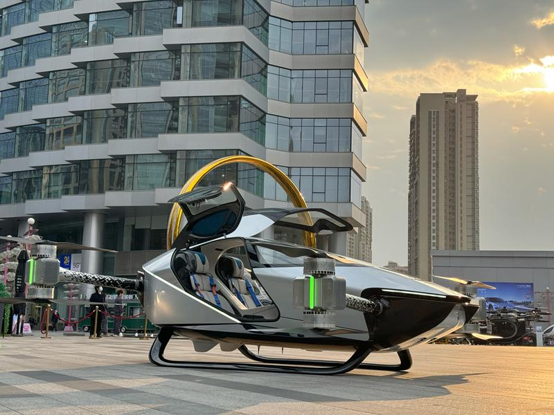
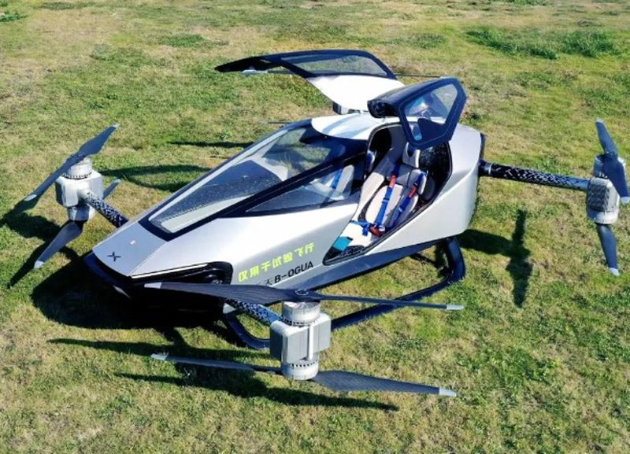
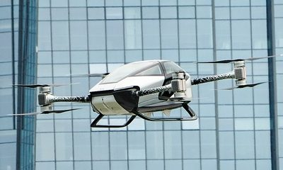
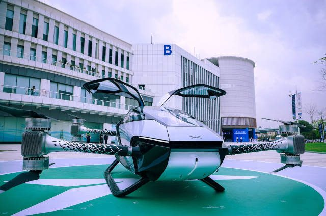

以国内代表型载人电动垂直起降飞行器为对象，从产品概况、关键技术、技术可行性、应用场景与市场可行性五个维度展开深度分析。
旅航者 X2 是小鹏汇天自主研发的第五代载人电动垂直起降飞行器（eVTOL），采用封闭式双人座舱与多旋翼构型，机身以碳纤维复合材料打造，外观与小鹏汽车共享家族化设计基因。它是国内较早提出申请并成功获批特许飞行证的有人驾驶 eVTOL 产品之一，主打城市低空短途出行与低空文旅演示场景。



| 参数项 | 指标 / 说明 |
|---|---|
| 机型类别 | 纯电多旋翼 eVTOL，封闭式双人座舱 |
| 旋翼布局 | 四轴八桨分布式电推进 |
| 空机重量（含电池） | 约 560 kg |
| 最大载重 | 约 200 kg（两名乘员及随身物品） |
| 最大飞行高度 | 1000 m |
| 最大平飞速度 | 130 km/h |
| 续航时间 | 约 25 min（受电池能量密度与载重影响） |
| 机身材料 | 碳纤维复合材料承力结构 |
| 核心功能 | 自动驾驶、雷达测距、感知避障、一键启动 / 返航 / 降落 |
| 技术系统 | 技术构成与作用 |
|---|---|
| 分布式电推进系统 | 多个电机与螺旋桨独立布置，单组动力失效时其余动力可维持可控降落；通过差速控制实现姿态与航向调整。 |
| 飞控与自主飞行 | 飞控计算机统筹姿态稳定、航线跟踪、自动悬停与一键返航，降低对飞行员操作经验的依赖。 |
| 环境感知与避障 | 搭载雷达测距与视觉感知，识别障碍物与相对距离，为低空城市环境飞行提供避障输入。 |
| 轻量化承力结构 | 碳纤维机身在保证结构刚度的同时控制整机重量，为载重与续航留出空间。 |
| 纯电储能与热管理 | 动力电池提供全部动力，配合电池管理与热管理系统，保障充放电安全与工况稳定。 |
综合判断：在短途、限定空域、良好气象的演示与试点场景下，技术可行性已经得到验证；面向规模化日常载人运营，仍需在电池、可靠性与适航技术上持续突破。
跨江、跨枢纽的点对点低空出行，缓解地面交通拥堵，是 UAM 城市空中交通的核心设想场景。
急救人员、医疗样本或设备快速抵达地面车辆难以进入的区域，承担侦察与短途转运任务。
景区、城市地标周边的低空游览与体验飞行，是当前商业落地较早、需求较明确的场景。
偏远地区或复杂地形的应急物资投送、电力与管线空中巡检等 B 端作业场景。
| 维度 | 现状与判断 |
|---|---|
| 政策与产业环境 | 低空经济被列为重点扶持方向，多地建设示范岛与起降设施，产业链与资本关注度较高。 |
| 短期市场结构 | 需求集中在文旅体验、应急救援、展示演示等 B 端与试点项目，付费意愿与场景相对明确。 |
| 规模化制约因素 | 适航认证周期长、空域管理与航线规划不完善、起降坪等基础设施不足、整机售价与运维成本偏高。 |
| 长期展望 | 随法规标准、空域管理、电池技术与基础设施逐步成熟，城市低空出行具备较大的中长期商业潜力。 |
旅航者 X2 代表了国内 eVTOL 稳妥、务实的技术路线：以成熟多旋翼构型为基础，结合纯电推进、自主飞控与轻量化结构，完成了多轮城市场景试飞与特许飞行验证。它在短途试点场景下技术可行、市场方向清晰，但现阶段仍属于技术验证与示范运营阶段，距离大规模民用普及，还受制于电池续航、适航认证、空域管理、地面配套设施与成本等多重约束。
整体来看，该机型是观察中国低空经济与飞行汽车产业化进程的一个典型样本：技术先行验证、场景逐步落地、法规与配套同步完善，是其走向商业化的基本节奏。